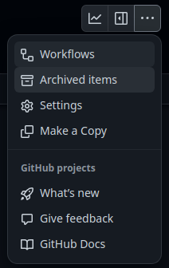
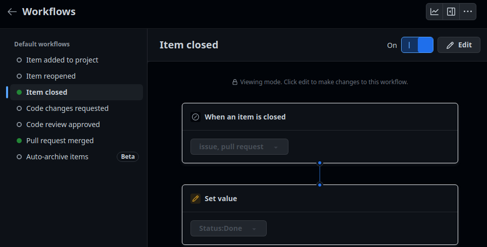
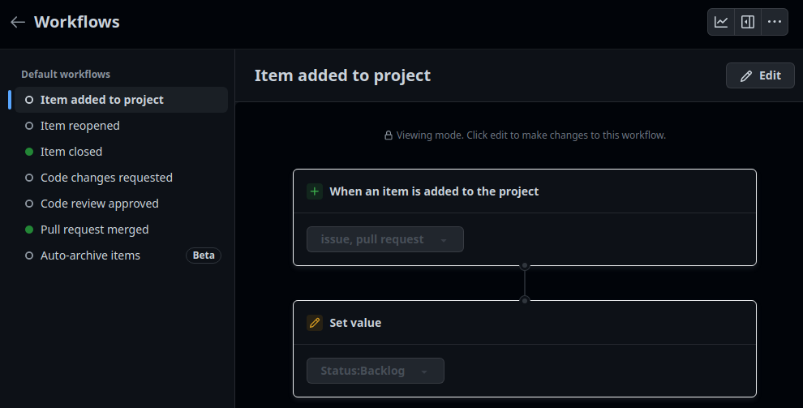
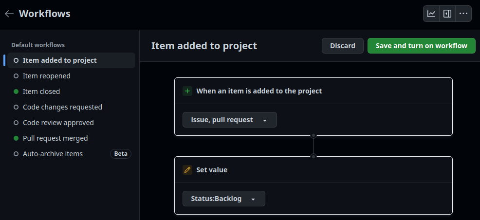
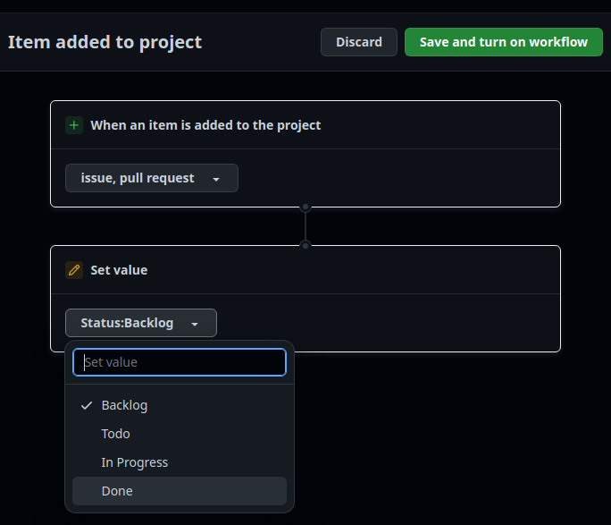

Flujos de trabajo de los ítems de GitHub Projects
Los flujos de trabajo de GitHub Projects permiten fijar automáticamente el estatus de un ítem cuando se producen ciertos eventos relacionados con él. No son muy flexibles, pero para ciertas cosas sí son muy interesantes y útiles.
Al finalizar, sabrá:
-
Qué es un flujo de GitHub Projects, no confundirlos con los de GitHub Actions.
-
Qué flujos de trabajo hay disponibles en GitHub Projects.
-
Como activar o desactivar flujos de trabajo.
-
Cómo modificar un flujo de trabajo.
Introducción
La automatización (automation) consiste en convertir tareas o procesos manuales en automáticos. Esta automatización se puede realizar con flujos internos de GitHub Projects, los que aquí vamos a presentar; o con flujos de trabajo de GitHub Actions, los cuales quedan fuera del ámbito de este libro. Un flujo de trabajo de GitHub Projects (GitHub Projects workflow) no es más que la automatización de algo cuando sucede un determinado evento que puede afectar a un ítem del proyecto. Se utilizan principalmente para fijar el valor del estatus de los ítems cuando sucede algo relacionado con él. En el momento de escribir estas líneas, los posibles flujos disponibles son:
| Flujo | Descripción |
|---|---|
| Item added to project | Para fijar el estatus inicial de los nuevos ítems del proyecto. |
| Item reopened | Para fijar el estatus de un ítem del proyecto cuando se reabre una propuesta (issue) y/o solicitud de integración (pull request) asociada a él. |
| Item closed | Para fijar el estatus de un ítem del proyecto cuando se cierra una propuesta y/o solicitud de integración asociada a él. |
| Code changes requested | Para cambiar el estatus de un ítem del proyecto si una revisión de código de una solicitud de integración solicita cambios. |
| Code review approved | Para fijar el estatus de un ítem del proyecto cuando se aprueba una solicitud de integración asociada a él. |
| Pull requested merged | Para fijar el estatus de un ítem del proyecto cuando una solicitud de integración asociada a él se integra en otra rama. |
| Auto-archive items | Para archivar un ítem del proyecto cuando cumple una determinada condición como, por ejemplo, que esté cerrada y lleve así x días. |
De manera predeterminada, sólo se encuentran activados los flujos Item closed y Pull request merged. Personalmente, me gusta fijar también el estatus inicial de los nuevos ítems con Item added to project.
Activación/desactivación de un flujo de trabajo
Para activar o desactivar un flujo de trabajo de GitHub Projects, en primer lugar hay que saber llegar a ellos:
-
Ir al proyecto.
-
Hacer clic en los tres puntos (
...) para mostrar su menú contextual:
-
Seleccionar Workflows, lo que mostrará los flujos de trabajo disponibles:

Una vez nos encontramos en los flujos, lo siguiente es activar o desactivar aquel que nos interese. Si el flujo ya está activado, como el de la imagen anterior, no hay más que desactivarlo haciendo clic en On. Ahora bien, si el flujo está desactivado:
-
Hacer clic en Edit:

-
Revisar el flujo para confirmar que es lo que queremos.
-
Hacer clic en Save and turn on workflow para activarlo:

Modificación de un flujo de GitHub Projects
Siendo sinceros, no es gran cosa lo que podemos hacer con estos flujos, pero ayudan en algo. Supongamos que, cuando se añada un nuevo ítem al proyecto, deseamos que se ubique en el estatus o columna Backlog. Esto podemos hacerlo de manera muy sencilla con el flujo Item added to project:
-
Ir a los flujos del proyecto.
-
Seleccionar el flujo Item added to project, el cual muestra a qué evento hay que reaccionar, en este caso, ante una issue y/o pull request:
-
En Set value, indicar el estatus a asignar a los nuevos ítems, en nuestro caso, Backlog:

-
Una vez hecho el cambio, hacer clic a Save and turn on workflow.
Si lo que desea es cambiar el estatus al que debe ir el ítem cuando se cierre su propuesta y/o solicitud de integración asociada, puede utilizar los flujos Item closed y Pull request merged. Más adelante, mostraremos detenidamente el flujo Auto-archive items.
Flujos de trabajo de GitHub Actions
También es posible utilizar los flujos de trabajo de GitHub Actions, por ejemplo, para crear ítems. El estudio de los flujos de GitHub Actions queda fuera del ámbito de este libro. A pesar de ello, puede echar un vistazo a https://github.com/akromio/nodejs-akromio/actions/workflows/create-project-item-for-dep-review.yaml. Con este trabajo, se crea un ítem todos los lunes para realizar la revisión de las solicitudes de integración generadas los domingos por Dependabot.
Si necesita crear ítems en un proyecto, actualmente no se puede utilizar el token generado or GitHub Actions. No tiene permisos suficientes. Hay que utilizar un token personal con el que se proporcione acceso a los ámbitos (scopes) repo y project. Una vez lo haya generado, añádalo al almacén de secretos de GitHub Actions, por ejemplo, con el nombre GH_PROJECTS_TOKEN y use este token en el script de creación del ítem.